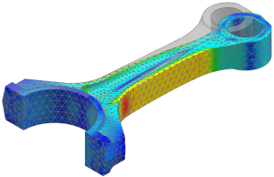

When you create a deformed model display, nodal displacements are initially transformed and scaled with respect to the origin of the current coordinate system. By default, this is the absolute coordinate system, but it may also be the work coordinate system or a selected results or model coordinate system.
